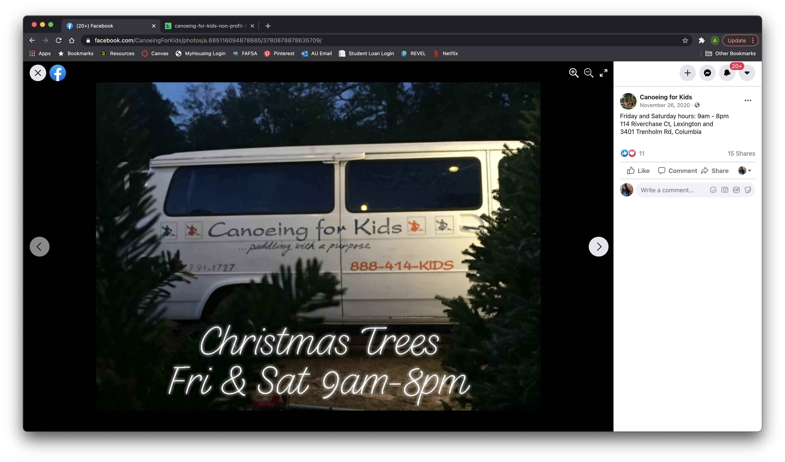
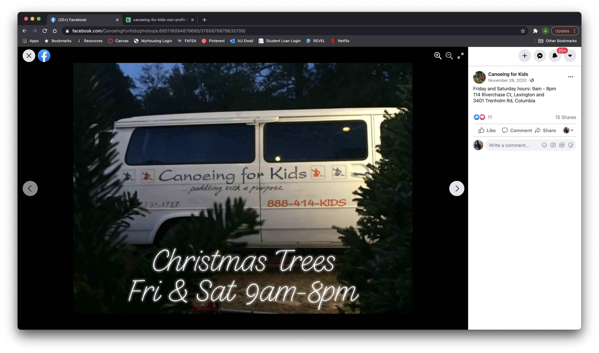

Primary Research
Current branding and marketing materials
Logo
The logo shown at the top of the website is pixelated and difficult to understand what it is. There are three different colored illustrations of people in kayaks/canoes. This logo could be improved if it was higher quality and designed as a higher dpi vector image that can scale without losing any quality.
Website
Canoeing for Kids' website is currently not optimal for viewers. It does not fill the window at full screen and does not scale with the size of the window. It also does not have a mobile-friendly version to increase legibility on a smaller screen.
The photos on the website are low quality and some are so pixelated that the content cannot be clearly understood. There are also random image titles listed as captions below the images that don't seem to have any form of organization.


Facebook Page
There are a limited number of marketing materials and advertising graphics shown on the Facebook page. The few that were posted appear to be created using Instagram or Facebook, or possibly a free template creator such as Canva or another app. The typefaces used are not cohesive and do not reflect the brand identity.
The photos posted on Facebook are much more clear and higher quality than those posted on the website. These images could still use some work to make them more professional and finished, but they reflect the brand better and make it seem more established.

 



Secondary Research
Recent news and innovations in the client's field
This article from the Harvard Business Review discusses what issues non-profits are facing during the time of Covid-19 in relation to their funding. It can come across as insensitive to ask for monetary donations when so many people are struggling both medically and financially, but non-profit businesses still need donations to stay afloat in such unexpected times. The article gave the example of what the YMCA did, which was sending out a message to members offering a month of free membership because they understood the situation that people are in and wanted to continue to have a long-term relationship with members rather than losing them due to financial struggles. They also mentioned in this message that if anyone had the extra income and wanted to donate to help their business, it would be greatly appreciated. This strategy is personal in that is shows a knowledge and understanding of the financial situation of many people right now, while still providing an avenue to potentially still receive donations to help them continue running their business.
According to this article from WalletHub, South Carolina has the 13th highest percentage of underprivileged children in the country. They rank #6 for health and #11 for education. With such a high percentage of underprivileged children in the state, there are so many opportunities for groups to take trips with Canoeing for Kids.
The above article from Adobe lists and explains some key tips for having professional and effective website design. It has things that both should and shouldn't be done on websites to make them the most user-friendly. A few of the key tips mentioned were easy-to-use navigation, using common language that can be easily understood, and having a responsive website.